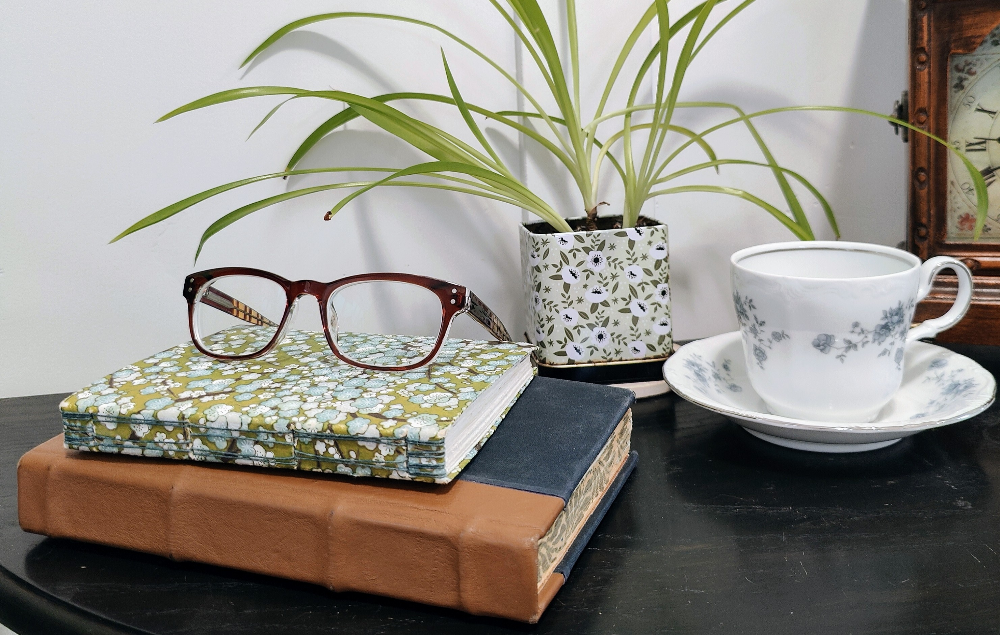
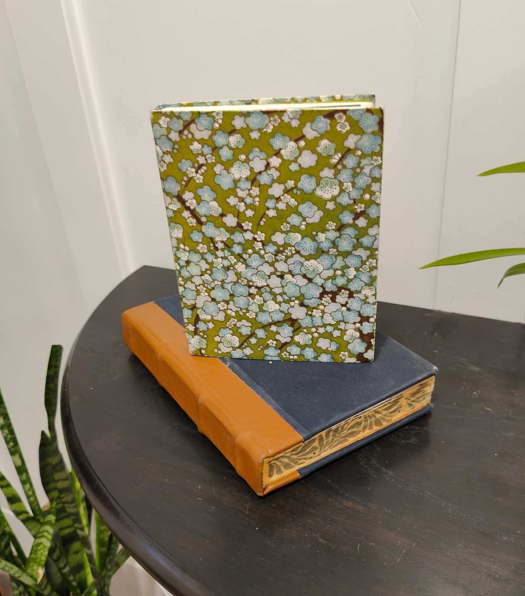
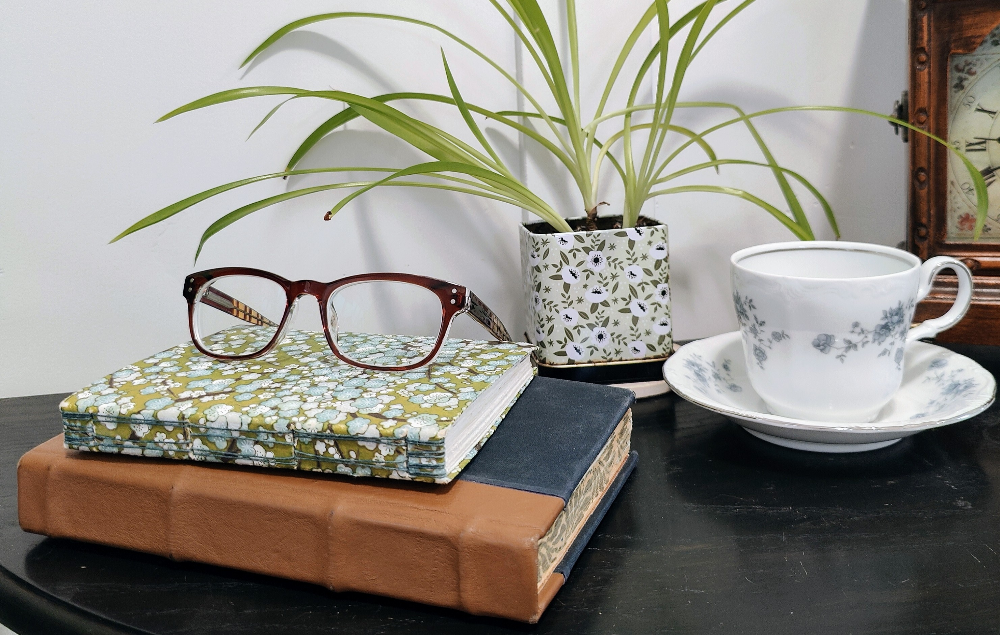
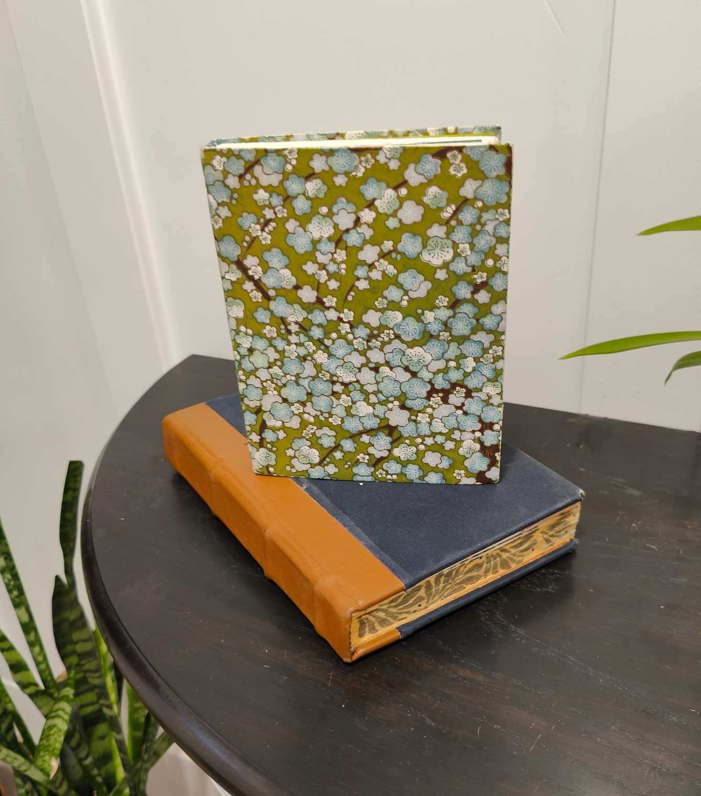

Annabelle Alldredge
Mom, Book Artist & Aspiring Data Analyst
My Portfolio
 





About
Each of these images show a part of my journey through life. I married in 2016 and started a family. I have a beautiful daughter and a handsome little baby boy. I absolutely adore them! Being a mom brings me joy. The field of sunflowers and grass is near my parents farm in rural Missouri where I grew up. The rose I grew myself at my home in Utah. I love gardens, especially flower gardens! Nature is awe inspiring. Hiking, camping, and relaxing outdoors is revitalizing for me. I also love the ocean! I went for the first time on my honeymoon in 2016. Another hobby of mine is book arts, which is book making and repair. I create archival quality books, journals, and book boxes. My last image is of me trying the hottest salsa available at a store. I had to sign a waiver! Also, I have eaten a Carolina Reaper, which at the time was the world's hottest hot pepper. Currently my interest is in tech and entering the tech field to pursue a career, which is why I am in the Tech-Moms program. Once a Tech-Mom, always a Tech-Mom!
My Skills
Book Arts
CSS
HTML
SQL
Contact Me
Saratoga Springs, UT, US
Phone: Upon request
Email: annabelle.alldredge@gmail.com